化学体系的静电势的计算和分析方法汇总An overview of calculation and analysis methods of electrostatic potential of chemical systems
文/Sobereva@北京科音 2026-Apr-12
0 前言
以前老有初学者问“请问如何计算电子云密度”这样的含糊问题，我遂写了篇《谈谈怎么考察、计算、分析化学体系的电子密度》（http://sobereva.com/715），把各种理论计算方式考察化学体系电子密度的方法做了全面的列举，免得每次回答时要打很多字。静电势（electrostatic potential, ESP）像电子密度一样也是十分知名、重要的三维实空间函数，在计算化学领域的文章中使用极为广泛，和分子反应位点、弱相互作用、凝聚相状态的物理性质等等都有特别密切的关系。我经常在网上看到有人问诸如“怎么计算静电势”这种问题，也是问得十分含糊，明显提问者是因为不知道静电势都有哪些计算、分析方法，所以在提问时才会如此不确切。本文将对考察化学体系静电势的方法做全面的罗列，以令读者能由此建立关于静电势分析的知识框架。
注意本文内容并不是对静电势本身以及分析方法做详细具体的介绍，而只是提供一个索引和相关资料的整合、概述，包含大量我之前写过的静电势相关博文的链接。在笔者讲授的“相关波函数分析与 Multiwfn 教程”（[已省略培训课程链接]）里面有关于静电势的最为完整、系统、深入的讲解，从基本定义开始把各种相关知识串起来非常细致地讲，涉及到巨量图片，并且给出十分丰富的计算实例，还讲了很多重要经验和要点，本文涉及的所有分析也都包括在内，因此极为适合希望从头一次性把静电势分析学习得特别通透、毫无遗漏的人参加。
极为流行的波函数分析程序Multiwfn是静电势分析方面最强大且十分易用的程序，可以实现本文涉及的所有研究方法，程序可以在官网http://sobereva.com/multiwfn免费下载。不了解Multiwfn者请阅读《Multiwfn FAQ》（http://sobereva.com/452）和《Multiwfn入门tips》（http://sobereva.com/167）。Multiwfn可以结合几乎所有主流量子化学程序做静电势分析，详见《详谈Multiwfn支持的输入文件类型、产生方法以及相互转换》（http://sobereva.com/379）。
我在《静电势与平均局部离子化能相关资料合集》（http://bbs.keinsci.com/thread-219-1-1.html）里给出了与静电势分析有关的很多综述和重要方法的原文，感兴趣的读者可选择性阅读。
注意很多文献里的molecular electrostatic potential (MEP)和本文的静电势（ESP）是同义词，只不过前者限定于分子体系。实际上静电势在团簇、固体表面、多孔物质研究方面也有很多应用。另外，第一性原理研究领域常见的Hartree势就是静电势的负值。
本文虽然通篇用分子这个词形容被考察的体系，但同样的分析也完全可以用于离子、原子和分子团簇，一些分析还可以用于周期性体系。
1 表面静电势填色图
在文献中特别常见分子表面静电势填色图，是展现静电势分布的最为常见的形式，也就是按照静电势在分子表面上不同位置的数值以不同颜色（根据色彩刻度条）展现。这里分子表面一般采用电子密度为0.001 a.u.或0.002 a.u.的等值面。下面的图是非常有代表性的这种图，(a)和(b)出自《Angew. Chem.上发表了全面介绍各种共价和非共价相互作用可视化分析方法的综述》（http://sobereva.com/746）介绍的笔者的综述，(c)出自《一篇文章深入揭示外电场对18碳环的超强调控作用》（http://sobereva.com/570）介绍的笔者的论文，关于这些图展现的信息的讨论见相应论文。
ESPcolorfilled.png (350.8 KB, 下载次数 Times of downloads: 199)
下载附件 Download
2026-4-12 12:55 上传 Uploaded
上面这些图都是按照《使用Multiwfn+VMD快速地绘制静电势着色的分子范德华表面图和分子间穿透图》（http://sobereva.com/443）介绍的方法绘制的，此文里还有大量细节和要点说明。此文介绍的方法是绘制这种图最方便也是最快的方法，图像效果也非常好，且不涉及收费程序，因此广为流行。Multiwfn与VMD相结合绘制这种图之所以特别快、目前主流个人计算机上结合不太大基组用于几百原子体系也能实现，关键在于Multiwfn计算静电势的效率非常高，详见本文第8节的相关信息，还在于此文中的做法利用了我设计的一个特别重要的节约时间的技巧，细节见《巨幅降低Multiwfn结合VMD绘制分子表面静电势图耗时的一个关键技巧》（http://sobereva.com/602）。
如果你的体系特别大，比如都达到上千原子了，像是不小的蛋白质、多糖等生物大分子，那么用量子化学方法计算的波函数产生静电势来绘制上面这种图极难实现，这种情况建议让Multiwfn基于原子电荷计算静电势并结合VMD绘制，耗时极低，详见《基于原子电荷极快速绘制超大体系的分子表面静电势图》（http://sobereva.com/639）。至于用的原子电荷，对于蛋白质、核酸，可以用AMBER等生物分子力场直接定义的各个残基的原子电荷，而对于比如很大的有机聚合物，可以用Multiwfn支持的EEM方法基于几何结构迅速算出来原子电荷，见Multiwfn手册4.7.5节的EEM计算例子。
这种图不仅可以用于孤立体系，也可以用于周期性体系，比如相关 CP2K 第一性原理教程（http://www.keinsci.com/KFP）里面讲电子结构分析部分给出的这个单层COF体系的例子：
ESPcolorfilled2.png (291.47 KB, 下载次数 Times of downloads: 221)
下载附件 Download
2026-4-12 12:56 上传 Uploaded
分子表面静电势图还可以只对特定原子或片段对应的区域绘制，以着重展现感兴趣的区域，做法参考《使用Multiwfn结合VMD绘制分子局部区域表面静电势的方法》（http://sobereva.com/750）。比如下面只展现了苯酚的碳原子对应的局部表面的静电势，这和pi电子密切相关。
ESPcolorfilled_pi.png (96.95 KB, 下载次数 Times of downloads: 231)
下载附件 Download
2026-4-12 12:56 上传 Uploaded
2 分子表面静电势的定量分析
对于分子表面上的静电势分布，除了上一节说的通过作图直观、定性方式考察外，Multiwfn还可以对其做各种定量方式的考察，对于定量分析和对比有极其关键的价值，这一节汇总说一下。这种分析属于定量分子表面分析，用到的算法在笔者的文章J. Mol. Graph. Model., 38, 314 (2012) DOI: 10.1016/j.jmgm.2012.07.004里有详述，Multiwfn的主功能12专门用来实现这类分析。注意Multiwfn不仅可以对静电势做定量分子表面分析，极为灵活的这个模块还可以对分子表面上的平均局部离子化能（ALIE）、局部电子附着能（LEAE）、福井函数等各种其它实空间函数的分布也做这种分析。
2.1 分子表面上静电势相关的描述符
有很多非常重要的分子描述符是基于分子表面静电势定义的，比如分子表面静电势最大值和最小值、静电势平均值和方差σ^2、电荷平衡度ν、ν和σ^2的乘积νσ^2、静电势为正和为负的面积，等等，详见Multiwfn手册3.15.1节，以及上述的J. Mol. Graph. Model.文章里的介绍，它们也叫做general interaction properties function (GIPF)描述符。基于这些描述符可以构建QSPR（定量结构-属性关系）预测很多体系凝聚相性质，被应用得特别广泛，这在《使用Multiwfn预测晶体密度、蒸发焓、沸点、溶解自由能等性质》（http://sobereva.com/337）有很多介绍和示例。顺带一提，关于Multiwfn能算的分子描述符，在《Multiwfn可以计算的分子描述符一览》（http://sobereva.com/601）里有最全面的说明。
分子极性指数（molecular polarity index, MPI）是我基于分子表面静电势定义的一个量，用于衡量分子极性，基本思想是体现静电势在分子表面上的不均衡程度。MPI非常普适，能很好地展现出各种分子实际的极性，通过Multiwfn计算还非常方便，因此已被文献用得很多了。详见《谈谈如何衡量分子的极性》（http://sobereva.com/518）里的介绍和示例。特别值得一提的是，很多体系是中心对称的，偶极矩为0，因此教科书里经常用偶极矩来衡量极性的做法根本不适用，而MPI则完全适合。我在Carbon, 171, 514 (2021)文章中对18碳环这种中心对称的新颖分子就通过了MPI来阐释了其极性大小。
如http://sobereva.com/518所述，我还提出了分子表面极性和非极性表面积的一种经验定义，即分子表面静电势绝对值超过10 kcal/mol的地方算作极性区域，否则为非极性区域。在Multiwfn做静电势的定量分子表面分析时会直接输出相应的面积。
2.2 表面静电势的极值点分析
分子表面静电势的极值点包括极大点和极小点，除了表面静电势（全局）最大点和最小点外，还有局部极大点和局部极小点。Multiwfn可以将所有这些极值点都搜索出来，根据它们的位置和数值可以预测和解释很多问题，比如不同类型分子间相互作用的位置和强度、容易发生亲电或亲核的反应位点。Chem. Sci., 2, 883 (2011)还利用这种信息提出了预测两种分子之间是否能形成共晶的方法，在相关波函数分析与 Multiwfn 教程（[已省略培训课程链接]）里做了详细介绍。教程中讲了一大堆这种分析的价值，比如下面的例子体现了表面静电势极值点可以与分子间静电主导的相互作用强度有十分密切的关系，横坐标V就是文章作者用Multiwfn计算的取代甲烷的碳上的表面静电势极大点数值，极值点示意图是Multiwfn直接显示的。可见水分子的氧正冲着取代甲烷的那个极大点，作用强度和V的大小有极好的线性关系，体现了这个作用是静电主导的、不同二聚体相互作用能的差异直接来自于取代基对碳的那个极大点的静电势值所表现的Lewis酸性的影响。如果你研究弱相互作用体系时仅仅是算了算几何结构和结合能，而没有像这样更进一步地解释结果、做相关性分析，就显得太肤浅了。
ESP_surf_int.png (123.09 KB, 下载次数 Times of downloads: 211)
下载附件 Download
2026-4-12 12:56 上传 Uploaded
ESP_surf_int2.png (159.79 KB, 下载次数 Times of downloads: 215)
下载附件 Download
2026-4-12 12:57 上传 Uploaded
Multiwfn搜索表面静电势极值点并可视化的过程《使用Multiwfn的定量分子表面分析功能预测反应位点、分析分子间相互作用》（http://sobereva.com/159）里对操作过程做了简要示例，手册4.12.1节也有很多讲解。
Multiwfn给出的表面静电势极值点数值可以自行标在分子表面静电势填色图上便于读者观看，正如本文第1节和下面一节给出的图那样。并不用所有极值点都标注，最大点和最小点，以及比较重要的局部极大和极小点标注即可。
2.3 面积分布统计
我在J. Phys. Org. Chem., 26, 473 (2013)和Struct. Chem., 25, 1521 (2014)提出了表面静电势分布面积统计的思想，准确描述了分子表面上处于不同静电势范围内的面积，在定量考察和对比分子特征方面有重要意义。并且由于Multiwfn里做这种分析非常方便，已被文献使用得十分广泛了。操作详见《使用Multiwfn结合VMD分析和绘制分子表面静电势分布》（http://sobereva.com/196）。例如下面这张图是《18个氮原子组成的环状分子长什么样？一篇文章全面揭示18氮环的特征！》（http://sobereva.com/725）介绍的我的理论预测18氮环分子的论文里的图，右侧是18氮环（N18）表面静电势面积分布统计，并与18碳环（C18）的情况做了对比。明显可看出N18的表面静电势在广得多的数值范围内分布，因而极性特征显著。N18具有明显的Lewis酸性（亲电）和碱性（亲核）位点，并且表面静电势为正的面积明显大于为负的面积，正值的上限还挺高。相比之下18碳环的极性非常弱，表面上各处静电势都很小，分布在接近0的狭窄的范围内。
N18.png (319.79 KB, 下载次数 Times of downloads: 193)
下载附件 Download
2026-4-12 12:57 上传 Uploaded
下图是是《Multiwfn波函数分析程序的最新最全面的介绍文章已在JCP上发表！》（http://sobereva.com/726）介绍的2024年发表的Multiwfn原文J. Chem. Phys., 161, 082503 (2024)中的图，给出了两种苯衍生物的表面静电势信息，同时包含表面静电势填色图、极值点位置和数值、静电势分布面积统计，以及许多基于表面静电势定义的描述符，从图像和定量数据上共同清楚展现出这俩分子的特征差异极大。
JCP.jpg (177.19 KB, 下载次数 Times of downloads: 232)
下载附件 Download
2026-4-12 12:58 上传 Uploaded
2.4 局部原子表面上的静电势分析
在Multiwfn手册3.15.2.2节介绍了我提出的把分子表面划分为各个原子对应的局部表面的方法，这使得前面对分子表面定义的各种描述符可以对各个原子分别计算，直接体现出体系中不同原子的差异。在《谈谈怎么计算“原子的静电势”》（http://sobereva.com/641）里给出了这种分析的实际例子，通过考察丙烯醛三个碳原子的局部分子表面上的静电势平均值，准确地解释了实验上最容易受到硬亲核试剂进攻发生反应的位点。下面图中不同颜色对应丙烯醛不同原子的局部分子表面区域，数值（kcal/mol）是三个碳原子局部表面上的静电势平均值。
acrolein.png (199.09 KB, 下载次数 Times of downloads: 255)
下载附件 Download
2026-4-12 12:58 上传 Uploaded
2.5 特征区域的静电势分析
分子表面上的一些静电势明显为正或为负的区域往往对应体系的特征区域，比如sigma穴区域、pi穴区域、孤对电子丰富的区域等。如果这些区域里面有静电势极大点或极小点，那么Multiwfn可以对这些区域给出它的面积和静电势的平均值。举个例子，下图左侧是ClPO2分子的表面静电势填色图和极值点。Cl的键轴末端的表面静电势极大点体现了sigma穴的存在，P原子在分子表面两侧各一个极大点体现了pi穴的存在。Multiwfn里可以把这些极大点附近静电势大于用户设的数值（如0.03 a.u.）的区域确定出来，从而给出这两种特征区域的面积和静电势平均值，并且还可以结合VMD将这样的区域画出来，如下图中间和右边所示。这个分析的完整操作过程见Multiwfn手册4.12.10节的示例。
ESPhole.png (144.81 KB, 下载次数 Times of downloads: 248)
下载附件 Download
2026-4-12 12:58 上传 Uploaded
2.6 表面静电势的盆分析
Atoms-in-Molecules (AIM)理论中，三维空间可以通过电子密度的零通量面划分成各个原子对应的独立空间（盆），并分析盆里的特征，称为盆分析，见《使用Multiwfn做电子密度、ELF、静电势、密度差等函数的盆分析》（http://sobereva.com/179）。受这个思想的启发，我提出可以将分子表面上被映射的静电势类似地使用零通量面的思想划分成有意义的局部表面。详情和例子见Multiwfn手册4.12.11节。
3 三维空间中的静电势分布分析
这一节的分析考察的是整个三维空间中静电势的分布，而不是像之前小节说的只考察分子表面上静电势的分布。
静电势的等值面图十分有用，可以很直观展现静电势分布情况。下面左图是Multiwfn直接绘制的乙硫醛的静电势为-0.02899 a.u.的等值面图，其中蓝色小球是Multiwfn搜索出的两个静电势极小点，数值也标了上去（kcal/mol），这个图十分清楚地展现出了硫由于存在孤对电子而产生的静电势为负的特征区域。下图右侧出自我研究18碳环弱相互作用的文章Carbon, 171, 514 (2021)，18碳环静电势为+0.001 a.u.和-0.001 a.u.的等值面分别是绿色和蓝色，极小点也显示了出来并标注了静电势数值。此图静电势为负的区域来自于18碳环较短的C-C键上拥有的较丰富的pi电子，但由于静电势极小点的大小很小，因此18碳环并不可能与其它分子形成静电作用充分主导的相互作用。笔者的18碳环相关的研究汇总见http://sobereva.com/carbon_ring.html，里面有对此体系特征的深入的讨论。
ESPisosur.png (256.57 KB, 下载次数 Times of downloads: 234)
下载附件 Download
2026-4-12 12:59 上传 Uploaded
上面左图的绘制过程见《绘制静电势全局极小点+等值面图展现孤对电子位置的方法》（http://sobereva.com/493）。上面右图的绘制过程是先用Multiwfn导出静电势cube文件，然后按照《在VMD里将cube文件瞬间绘制成效果极佳的等值面图的方法》（http://sobereva.com/483）介绍的方法在VMD里显示成静电势等值面图，之后用Multiwfn对静电势极值点进行搜索后导出记录它们的pdb文件并载入VMD里显示成小圆球。
这里说一下Multiwfn计算静电势格点数据的细节。Multiwfn的主功能5专门用来对三维空间里的一块指定的区域计算包含静电势在内的各种实空间函数，Multiwfn手册4.5节有各种相关例子。简单来说，进入此功能后，选择静电势作为被计算的函数，然后设置格点，Multiwfn就会开始计算静电势格点数据，算完后在后处理菜单中可以用相应选项直接观看等值面图，或者导出静电势格点数据为cube文件。如果你的机子里装了Gaussian，可以让Multiwfn调用Gaussian自带的cubegen程序显著节约计算静电势格点数据的耗时，参见《Multiwfn现已可以调用cubegen使静电势分析耗时有飞跃式的下降！》（http://sobereva.com/435）。
整个三维空间中的静电势的极大点总在原子核上，实际关注的静电势极值点一般是极小点。Multiwfn搜索静电势的极值点有两种方式，一种是用盆分析模块（主功能17），先算出来静电势格点数据，然后用基于格点的算法寻找极大和极小点，操作参见《使用Multiwfn做电子密度、ELF、静电势、密度差等函数的盆分析》（http://sobereva.com/179）。这种方法可以确保所有极值点被找出来，不会有遗漏，但定位精度依赖于格点间距，间距越小越准但计算越耗时。另一种方法是用Multiwfn的拓扑分析模块（主功能2）靠非线型优化算法搜索静电势极值点，这种方法可以定位得非常精确，但能找到什么极值点一定程度上依赖于初猜位置。Multiwfn也可以把两种方法相结合，以第一种方法得到的相对粗糙的位置作为第二种方法的初猜位置。详情和例子见《使用Multiwfn对静电势和范德华势做拓扑分析精确得到极小点位置和数值》（http://sobereva.com/645）。
JPCA, 123, 10139 (2019)提出了通过本衍生物的静电势全局最小点的静电势的Hessian矩阵本征值特征考察芳环的芳香性，这种方法衡量芳香性比较费事且间接，不如《衡量芳香性的方法以及在Multiwfn中的计算》（http://sobereva.com/176）里介绍的很多方法好用。这种分析靠Multiwfn倒是也可以实现。先用Multiwfn以上述方式搜索出静电势全局最小点坐标，然后进入主功能1，输入f12，再输入最小点坐标值，Multiwfn输出的Hessian矩阵及其本征值、本征矢就是对静电势而言计算的，再自行根据JPCA文中的做法利用这些数据衡量芳香性即可。
Multiwfn做静电势的盆分析不仅可以得到极大点和极小点，还可以根据静电势的零通量面把三维空间划分为不同子空间，这称为盆（basin），并得到盆的体积、盆中任意函数的积分值，还能图形化展示子空间区域，http://sobereva.com/179里有操作过程简述。例如“相关波函数分析与 Multiwfn 教程”（[已省略培训课程链接]）幻灯片里下图的这个例子，4、5号小圆球各对应一个静电势极小点，也正好与氧原子有两对孤对电子相呼应。每个极小点都对应一个静电势为负值（蓝色）的盆，在里面对电子密度进行积分就得到了盆的布居数，体现了对应单个孤对电子的静电势为负的区域里有多少电子。类似地，静电势为正的区域（绿色）也可以划分为归属于氧和两个氢的共三个盆。
ESPbasin.png (233.16 KB, 下载次数 Times of downloads: 187)
下载附件 Download
2026-4-12 13:00 上传 Uploaded
4 静电势平面图
Multiwfn的主功能4可以十分方便快捷地对静电势在内的Multiwfn支持的各种函数绘制平面图，包括填色图、等值线图、地形图、梯度线图等等，作图选项设置十分丰富灵活，“相关波函数分析与 Multiwfn 教程”（[已省略培训课程链接]）里给了大量例子并全面介绍了各种相关技巧，在Multiwfn手册4.4节也有不少示例。例如下图是Multiwfn直接绘制的碳纳米管片段截面的静电势等值线图，红色实线和蓝色虚线分别对应静电势为正和为负的部分，电子密度为0.001 a.u.描述的范德华表面轮廓（蓝色粗线）一起在图上显示了。可见这张图把此平面上不同区域的静电势特征展现得极为全面直观，并能清楚地看出碳纳米管片段的范德华表面在管内和管外的部分的静电势都为负。从此图也可以清楚看到，距离原子核较近区域的静电势都为正，是因为这样的区域由核电荷主导所致，这是所有化学体系的共同特征，而正因为碳纳米管有丰富的pi电子，才导致了那些静电势为负区域的出现。顺带一提，pi电子的分布可以用Multiwfn通过《在Multiwfn中单独考察pi电子结构特征》（http://sobereva.com/432）介绍的方法准确地考察。
CNT_ESP.png (63.96 KB, 下载次数 Times of downloads: 204)
下载附件 Download
2026-4-12 13:00 上传 Uploaded
顺带一提，Multiwfn还可以非常方便地给出准分子的静电势图和变形静电势图（一维、二维、三维图像皆可）。准分子的静电势就是体系中各个原子处于孤立状态的电子密度简单叠加对应的静电势，相当于原子间尚未出现任何相互作用时的静电势。变形静电势是实际分子的静电势与准分子的静电势之差，体现了原子间相互作用的形成是如何影响静电势的。将实际静电势分解成准分子静电势和变形静电势两部分，十分有助于理解实际静电势的分布为什么是那样。例如下图来自于我的论文J. Mol. Model., 19, 5387 (2013) DOI: 10.1007/s00894-013-2034-2，三个子图都是Multiwfn直接绘制的，标注的文字非常有信服力地解释了为什么N2分子的静电势平面图中在键轴两端明显为负，而垂直于键轴方向明显为正。
N2_ESP.png (184.75 KB, 下载次数 Times of downloads: 232)
下载附件 Download
2026-4-12 13:01 上传 Uploaded
绘制准分子静电势和变形静电势图的过程分别和《使用Multiwfn作电子密度差图》（http://sobereva.com/113）里介绍的绘制准分子电子密度、变形密度图如出一辙，唯一的差别是Multiwfn里选择被绘制的函数那一步选择静电势而非电子密度。
5 静电势叠加图分析
将两个或多个分子的静电势图相叠加，可以从静电互补的角度考察为什么分子间能形成那样的复合物，以及预测和解释特定的复合物构型是否稳定。这是《静电效应主导了氢气、氮气二聚体的构型》（http://sobereva.com/209）介绍的我在J. Mol. Model., 19, 5387 (2013)中提出的思想，我称之为静电势互补原理，在Angew. Chem. Int. Ed., 64, e202504895 (2025)综述里的静电势部分也有相关说明。当复合物构型由静电作用主要决定时适用这种静电势互补原理：一个分子和另一个分子的静电势符号相反叠加时，叠加的区域两个分子的静电势的绝对值越大，则越有利于相应构型的形成、稳定。而静电势符号相同的叠加则不利于相应构型的形成，会造成去稳定化。这两种形式的叠加同时存在的话要看净效果。下面的图像出自J. Mol. Model., 19, 5387 (2013)，可见静电势互补情况的差异非常直观且极有信服力地解释了为什么N2和H2形成的各种构型的二聚体的稳定性各有不同。
N2_H2_ESP.png (362.44 KB, 下载次数 Times of downloads: 264)
下载附件 Download
2026-4-12 13:01 上传 Uploaded
再举个例子，18碳环是长-短键交替出现的。下图的左图是Carbon, 171, 514 (2021)中给出的18碳环二聚体极小点结构下两个分子表面静电势填色图的叠加图，极好地解释了为什么18碳环二聚体的极小点构型是一个碳环的长键与另一个碳环的短键（箭头所示）正好对着，因为这样的话可以最大程度地实现静电势互补。下图的右图是同一篇文章研究的水分子在18碳环外部结合的极小点构型的这种图，此图充分解释了为什么水分子的氢会冲着18碳环的较短C-C键结合，也是因为这样的结合能够充分实现静电势互补。
C18_complex.png (373.32 KB, 下载次数 Times of downloads: 216)
下载附件 Download
2026-4-12 13:02 上传 Uploaded
Multiwfn提供了极为便利的绘制以上等值面叠加图的脚本，用法见《使用Multiwfn+VMD快速地绘制静电势着色的分子范德华表面图和分子间穿透图》（http://sobereva.com/443），此文也使得这种叠加图如今在文献中已经很多见。至于等值线的叠加图，用户自行将各个单分子的静电势等值线图用Multiwfn的主功能4绘制后导出成图像文件，放到powerpoint里将透明色设为白色，再照着复合物的极小点结构手动摆一下即可得到。
6 特殊位置的静电势分析
Multiwfn的主功能1里可以输入任意坐标得到相应位置的静电势，以及原子核电荷和电子各自对静电势的贡献。在人为指定的一些特殊位置考察静电势值有一些实际价值，下面举几个例子。
我在《谈谈怎么计算“原子的静电势”》（http://sobereva.com/641）中介绍过，氢原子核位置的静电势（扣除其原子核自身产生的贡献）与质子解离难易程度有很密切关系。因此可以靠这个讨论不同分子或位点的酸性的不同。
J. Phys. Chem. A, 118, 1697 (2014)文中提出了ΔΔVn指数，并发现它与作为电子给体的分子和作为电子受体的分子之间的氢键、卤键等作用的相互作用能有挺好的线性关系。计算这个指数需要这两种分子上的相互作用原子的原子核位置的静电势。详情和计算例子参看Multiwfn手册4.1.2节。
一些平面体系的原子核上方一定距离处的静电势，或者比如球形体系的从原子核出发的法向量方向一定距离处的静电势，也有意义，和原子的特征关系密切。比如Science China Chemistry, 58, 1845 (2015) DOI: 10.1007/s11426-015-5494-7用Multiwfn计算了一些碳原子上方1.6埃（约为碳原子的范德华半径）处的静电势的值，文中称为ESP(1.6)，它与不少分子上不同位点发生亲核反应的优先级有密切关联。
7 拟合静电势电荷
拟合静电势电荷是原子电荷中的一类。原子电荷在《一篇深入浅出、完整全面介绍原子电荷的综述文章已发表！》（http://sobereva.com/714）介绍的笔者的综述里以及《原子电荷计算方法的对比》（https://doi.org/10.3866/PKU.WHXB2012281）中有充分介绍，包括拟合静电势电荷。在《RESP拟合静电势电荷的原理以及在Multiwfn中的计算》（http://sobereva.com/441）和《RESP2原子电荷的思想以及在Multiwfn中的计算》（http://sobereva.com/531）中也有拟合静电势电荷的诸多介绍。拟合静电势电荷有具体不同的实现，如CHELPG、MK、RESP、REPEAT等许多方法（因此说拟合静电势电荷时必须说清楚具体是哪种方法算的），共同基本特点是让基于原子电荷计算的静电势尽可能好地重现体系范德华表面外一定区域内的量子化学方式算的静电势，从而确定原子电荷的数值。相对于其它原子电荷计算方法，拟合静电势类型的原子电荷能相对更好地描述静电相互作用，因而很适合用于分子力场。上述博文里给了Multiwfn计算RESP和RESP2电荷的例子，Multiwfn手册4.7.1节也有CHELPG电荷计算例子，手册4.7.8节还演示了如何用Multiwfn非常直观地考察特定原子电荷对不同位置的静电势的重现性。《使用Multiwfn非常便利地创建CP2K程序的输入文件》（http://sobereva.com/587）介绍的Multiwfn创建CP2K输入文件的功能也可以直接创建CP2K算REPEAT电荷的输入文件。
注意由于原子电荷只是非常简单的模型，即一个原子一个点电荷，因此原子周围的静电势的一些明显的各向异性分布特征注定无法靠拟合静电势电荷体现出来，诸如与sigma穴、杂原子的孤对电子相联系的静电势的特征分布。但是，如果给特征区域增加额外的被拟合的点电荷，倒是可以显著改善对它们的描述。比如给sigma穴附近增加一个拟合点，拟合出来后这个点会有一定正值的电荷，由此能表现出sigma穴静电势为正的特征。Multiwfn在计算拟合静电势电荷时就允许在任意位置添加被拟合点，在前述的http://sobereva.com/441文中和Multiwfn手册4.7.7.6节都给了例子。
8 其它信息
这一节把其它一些我觉得应该了解的和静电势计算和分析有关的信息说一下。
8.1 静电势分析用的计算级别
考察静电势如果只需要定性正确的结果，就用平时做几何优化用的量子化学计算级别就可以，比如B3LYP/6-31G*就够。理论方法用常见的比如B3LYP、PBE0、wB97XD就足够好了，如果追求特别高精度而不在乎耗时，可以让Multiwfn载入比如记录CCSD自然轨道的波函数文件做静电势分析。Multiwfn在无论多高级别的理论方法下做静电势分析都可以，取决于输入的波函数文件里记录的是什么级别的自然轨道。Multiwfn手册4.A.8节还示例了结合ORCA或PSI4程序在CCSD(T)甚至更高级别下做波函数分析的方法。在基组层面，如果想达到定量准确的结果，最次也得6-311G*（跟氢关系大的时候给氢加极化），用更贵点的def-TZVP更好，而用到较贵的def2-TZVPP就非常好了，再提升则意义不大。若有的原子带负电荷很显著，给它们加弥散函数明显有益。值得一提的是，Multiwfn也支持用xtb程序产生的记录了GFN-xTB半经验级别波函数的molden文件做静电势分析，由于xtb做GFN-xTB计算速度极快，因此产生这样的molden文件耗时极低。但即便是GFN-xTB中目前最高级形式GFN2-xTB，其对应的静电势的质量还是不如哪怕B3LYP/6-31G*这种便宜档次，所以除非是B3LYP/6-31G*单点任务都算不动，否则我不推荐用GFN-xTB波函数做静电势分析。但如果只是绘制表面静电势图做粗略定性分析，GFN2-xTB的波函数倒还凑合，参考《巨大体系的范德华表面静电势图的快速绘制方法》（http://sobereva.com/481）文末的对比。
值得一提的是，Multiwfn也支持对原子电荷算的静电势做各种分析，此时计算静电势的速度超级快。chg是Multiwfn私有的一种记录原子坐标和电荷的格式，见Multiwfn手册2.5节。载入chg文件后，在Multiwfn做很多分析时出现的实空间函数选择界面里，可以选8 Electrostatic potential from atomic charges作为被绘制/计算/分析的函数，这就是基于原子电荷和坐标算的静电势。chg文件里的原子电荷原理上可以用任意方法、任意程序产生，包括Multiwfn支持的可以瞬间对巨大体系产生原子电荷的EEM方法，也可以是一些文献/力场里定义的原子电荷。当然，chg文件里的原子电荷对静电势重现性越理想越好。
溶剂对溶质的电荷分布有明显的极化效应，且溶剂的极性越大这个效应越强，因此溶剂效应对静电势也有明显影响，这在《RESP2原子电荷的思想以及在Multiwfn中的计算》（http://sobereva.com/531）文中有充分体现。显然，如果体系是在溶剂环境中的，用于静电势分析的波函数文件一般应当在PCM等主流的隐式溶剂模型下产生。
8.2 静电势的数值算法简况
在多数量子化学程序里，以及Multiwfn程序中，算静电势需要算大量的核吸引势积分，这是算静电势最耗时的地方。而且需要算静电势的位置越多耗时越高。在张鋆和笔者共同发表的介绍静电势高效计算方法的Phys. Chem. Chem. Phys., 23, 20323 (2021)一文中详述了细节，效率展示见《Multiwfn的计算静电势的内部代码速度得到了巨幅提升！》（http://sobereva.com/563）。目前Multiwfn算静电势默认用的就是这种算法，被计算静电势的位置可以根据需要自由定义。在利用平面波的第一性原理程序中算静电势的方法则与此有极大差异，计算过程中盒子里均匀分布着积分格点，基于格点上的电荷密度值通过求解Poisson方程结合快速傅里叶变换可得到这些均匀格点上的静电势，若需要其它位置的静电势可以通过相邻格点的静电势值插值得到。
8.3 预测反应位点
基于分子表面静电势分布可以预测亲电和亲核反应的位点，物理意义清楚、原理易于理解，只不过预测的实际准确度很有限，有其它表现得普遍更好的方法可以用。相关信息参见《Multiwfn支持的预测化学体系反应位点和反应活性方法一览》（http://sobereva.com/767）。
8.4 范德华势
静电势体现了体系经典静电作用层面的势场，在研究分子间相互作用层面还有一种同等重要的势场是范德华势，这在笔者的J. Mol. Model., 26, 315 (2020)文中做了详细介绍、讨论并给出了具体计算方法，在《谈谈范德华势以及在Multiwfn中的计算、分析和绘制》（http://sobereva.com/551）里面做了详细说明并给出了分析操作实例。《全面揭示各种碳环与富勒烯之间独特的pi-pi相互作用！》（http://sobereva.com/727）和《8字形双环分子对18碳环的独特吸附行为的量子化学、波函数分析与分子动力学研究》（http://sobereva.com/674）介绍的我的论文中的范德华势分析充分展现了其实际意义，是很有代表性的应用例子。
8.5 电场
电场是静电势的负梯度，是个矢量场，通过分析一个体系的电场可以考察它对其它物质的电子分布、体系朝向可能造成的极化作用等问题。在Multiwfn里利用主功能1可以计算特定位置的电场矢量，具体做法是进入主功能1后输入f12使得被计算导数的函数切换到第12号函数（静电势），之后再输入一个点的坐标，把输出的梯度矢量取负值就是这个位置的电场了。Multiwfn还可以对电场绘制特定平面上的向量场图，Multiwfn手册4.4.10节给了具体例子。例如下图是LiF分子的这种图，可见在原子核附近电场都是向四周发散的，而在更远处，电场方向整体是从带正电的Li指向带负电的F。
Efield.png (196.42 KB, 下载次数 Times of downloads: 228)
下载附件 Download
2026-4-12 13:02 上传 Uploaded
8.6 TrESP
静电势是基于原子核坐标和特定电子态的电子密度分布得到的，而《使用Multiwfn绘制跃迁密度矩阵和电荷转移矩阵考察电子激发特征》（http://sobereva.com/436）里介绍的跃迁密度（transition density）是基于两个电子态的波函数得到的，与电子跃迁特征密切相关。TrESP（transition charge from electrostatic potential）相当于把拟合静电势电荷计算中用的静电势替换为了跃迁密度对应的势，这样得到的原子的TrESP电荷对于计算和分析分子间激子耦合十分有意义，相关知识和计算例子见Multiwfn手册4.A.9节。
小声问两句，社长有计划将第二节提到的multiwfn的分子表面静电势分析功能从孤立分子体系扩展到周期性体系么？以及可以讲讲周期性体系里与静电势密切相关的固体表面功函数和偶极校正的问题么？
Uus/pMeC6H4-/キ 发表于 2026-4-12 14:28
小声问两句，社长有计划将第二节提到的multiwfn的分子表面静电势分析功能从孤立分子体系扩展到周期性体系么 ...
这是很早以前就有的计划，很多人也表示了需要。只是我一直太忙没时间弄，不过快有了
功函数和偶极校正和当前主题没多少关系，北京科音的CP2K教程中专门讲了这两个概念和用法
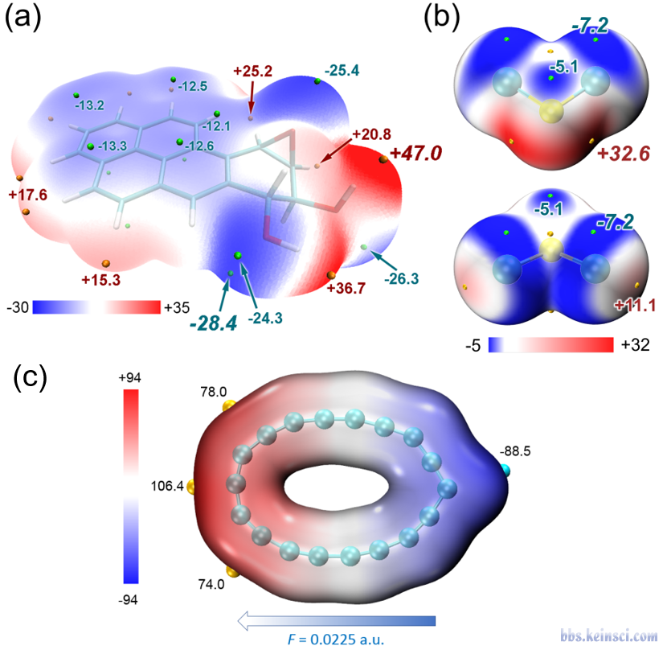
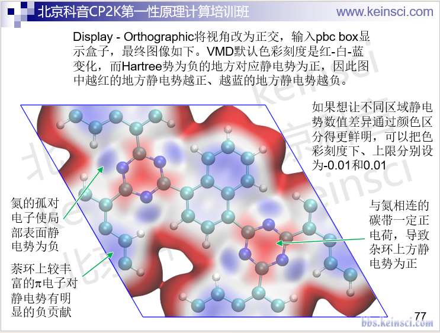
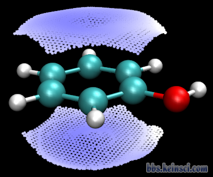
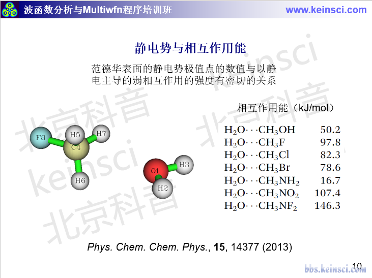
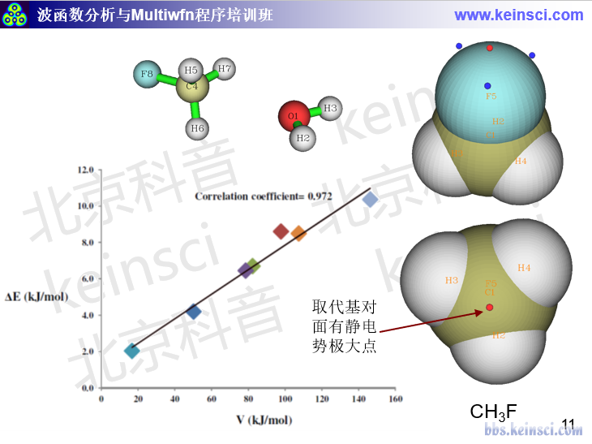
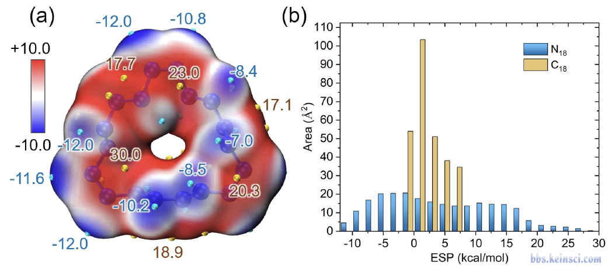
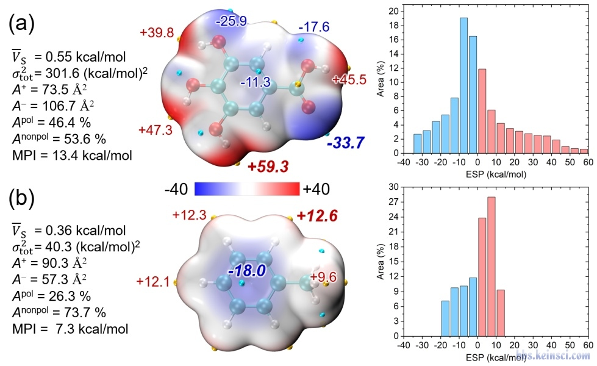
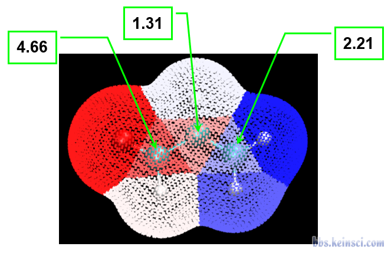
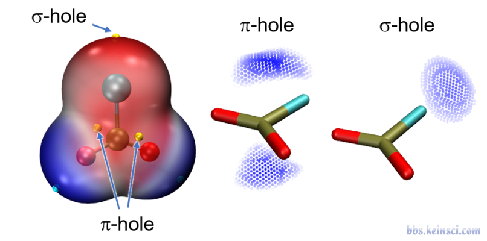
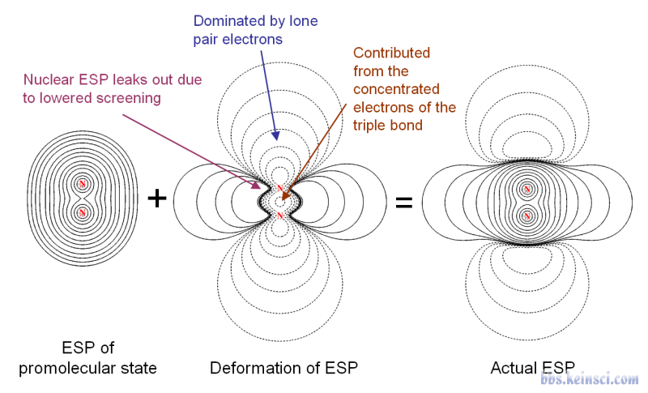
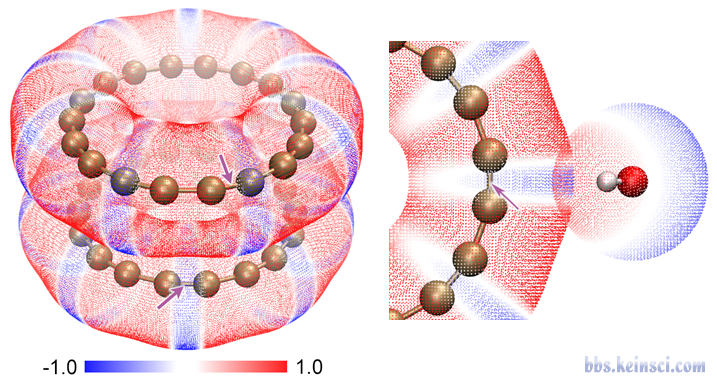
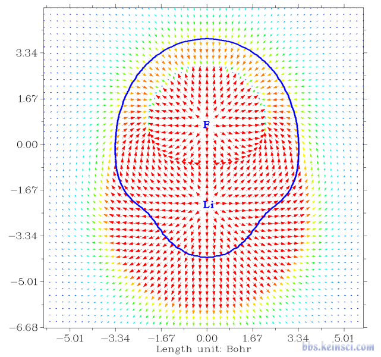
以上为本帖已下载的 12 个图片附件。